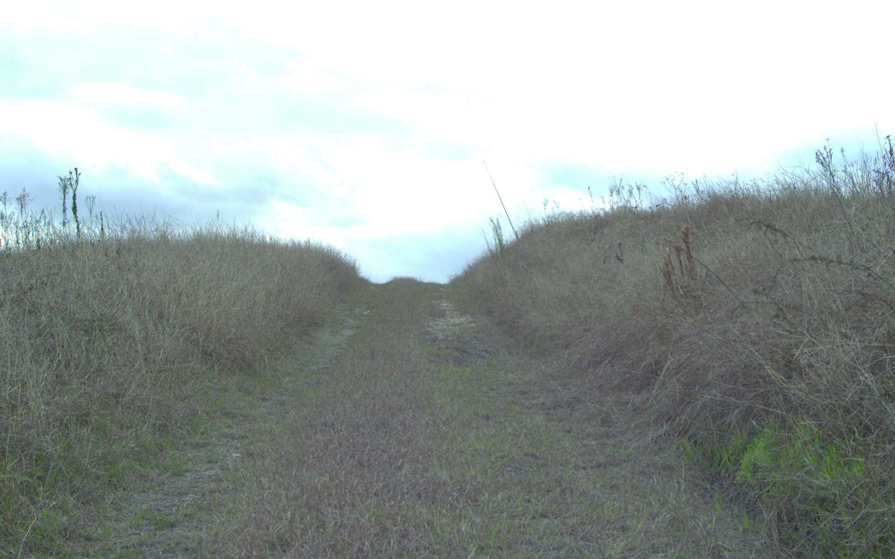

Decode & initialize
A frozen VLA supplies speed–curvature actions. Complete the horizon and blend the fresh plan with measured motion.
OFF-ROAD VISION · LANGUAGE · ACTION
Plan less. Stay in sync.
Fast Vision-Language-Action Execution
for Off-Road Autonomous Driving
Research manuscript · Public paper link forthcoming

RELLIS-3D · Recorded terrain imagery
THE IDEA
Multimodal inference is expensive. Vehicle motion keeps changing between predictions. Simply holding a decoded plan leaves its commands tied to an earlier state.
FastRoverVLA maintains the plan as execution state. It aligns decoded speed–curvature actions with measured motion, integrates a local trajectory, and writes the corrected remainder back for the next update. A bounded rule decides when to request a new visual plan.
Read the method specificationQwen3-VL-2B · 3 s horizon
01 / METHOD
An execution interface after action decoding.
No backbone features. No additional learned policy.
A frozen VLA supplies speed–curvature actions. Complete the horizon and blend the fresh plan with measured motion.
Correct actions against the current state at every update, apply the speed bound, and integrate a 3 s trajectory.
Consume the first action. Retain the corrected remainder so that subsequent updates inherit the correction.
A BOUNDED REUSE BUDGET
Normalize speed and curvature variation within the decoded plan. Higher roughness selects a shorter reuse budget; lower roughness selects a longer one.
A budget K permits K reuse updates.
The complete refresh interval is K + 1.
02 / EXPLORE THE REPLAY
Recorded motion. Frozen predictions.
Actual numerical outputs from the released CPU replay.
The plot shows local trajectories in metres, with forward distance on the horizontal axis. This is open-loop numerical replay, not a vehicle simulation. Protocol and reference-frame details ↗
03 / RESULTS
Primary numerical replay · Qwen3-VL-2B
1,286 windows across two datasets
| Execution | ORAD-3D | RELLIS-3D | ||||
|---|---|---|---|---|---|---|
| ADE ↓ m | FDE ↓ m | Refresh ↓ % | ADE ↓ m | FDE ↓ m | Refresh ↓ % | |
| Every update | 0.384 | 0.726 | 100.0 | 0.387 | 0.820 | 100.0 |
| Fixed interval | 0.330 | 0.599 | 8.2 | 0.289 | 0.584 | 11.4 |
| FastRoverVLA | 0.327 | 0.593 | 5.8 | 0.266 | 0.526 | 4.8 |
Shared frozen predictions; refresh counts are plan admissions, with zero model requests during replay. Primary archived scoring convention; see the separate past-only-heading check in the repository.
INDEPENDENT SERIAL REQUEST RUNS
ORAD · 355.4 → 21.4 ms/update
RELLIS · 443.9 → 21.3 ms/update
Qwen3 request-wrapper measurements from the original GPU runs. These are processing-cost ratios, separate from the frozen replay above; they do not measure asynchronous speedup or complete vehicle latency.
Persistent state correction is the main source of the observed accuracy benefit. A motion-only recurrent control is competitive, and equal-budget uniform refresh is close to the plan-conditioned rule. The release includes these controls so that the execution effect can be examined directly.
Reproduce the controls ↗04 / QUALITATIVE RESULTS
Camera projections and bird’s-eye views from the paper, using paired recorded scenes and trajectory outputs.
05 / OPEN SOURCE
A small execution core, full-precision configurations, released numerical traces, and direct checks against the archived outputs.
git clone https://github.com/chang2tz/FastRoverVLA.git
cd FastRoverVLA
python -m pip install --no-deps -e .
# Recompute and verify the numerical release
python scripts/reproduce.py --verifyCITATION
If the execution interface helps your research, please cite the software release. A paper citation will be added when the manuscript is public.
@software{fastrovervla2026,
author = {Zhao, Changtao and Guan, Yingxue and
Wang, Li and Song, Ziying and Zhao, Shijie and
Zhang, Yuhang and Zhang, Shengkai and Wang, Qing},
title = {FastRoverVLA: Fast Vision-Language-Action
Execution for Off-Road Autonomous Driving},
year = {2026},
version = {0.1.0},
url = {https://github.com/chang2tz/FastRoverVLA}
}